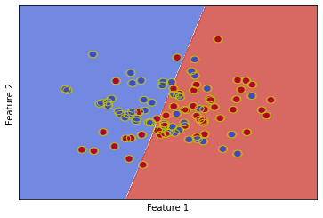

An Intuition for the Support Vector Machine
The support vector machine (SVM) is a widely-used machine learning algorithm. However,
Kernel methods are very useful pattern recognition algorithms, and still see wide use in practise. The most popular kernel method is known as the support vector machine (SVM).
The goal of an SVM, as with all classification algorithms, is to find a mapping \(f : \mathcal{X} \rightarrow \mathcal{Y}\) using a training dataset \(S \subset \mathcal{X} \times \mathcal{Y}\), where \(S = X \times Y\) for some \(X \subset \mathcal{X}\) and \(Y \subset \mathcal{Y}\). In this work, we will focus on a binary classification context: \(\mathcal{Y} = \{+1, -1\}\), and a simple 2D real vector space as our feature space: \(\mathcal{X} = \mathbb{R}^2\).
The estimation of \(f\) using the SVM optimisation algorithm can be done in various ways. We will cover the following concepts of the SVM framework: soft-margin, hard-margin, and the kernel trick. All of them, however, have the same overarching goal - compute an optimal separating hyperplane. Optimality of the hyperplane in the context of an SVM is that the hyperplane is defined to be the maximum-margin separating hyperplane. This makes intuitive sense, since a decision boundary that is far away from the classes as possible seems as if it would perform best in terms of generalisation performance.
The goal of the work is to develop an intuition about the various components of the SVM, when to use the various flavours, and why they do or do not work.
Recall that the dual formulation of the hard-margin SVM optimisation problem is given as: $$\min_{\alpha} \frac{1}{2} \sum_i \sum_j y_i y_j \alpha_i \alpha_j x_i^T x_j - \sum_i \alpha_i$$ subject to $$\alpha_i \ge 0, \sum_i y_i \alpha_i = 0 \text{ } \forall i$$
Finally, to classify a novel example \(x_t\), we compute the following decision rule: $$f(x_t) = \text{sign}(\sum_i y_i \alpha_i x_i^T x_t)$$
It is clear from this decision rule that we require an \(\alpha_i\) for every sample in the dataset. However, in reality it is often the case that \(\alpha_i = 0\) for most samples in the dataset, except for a few points. The points where \(\alpha_i \neq 0\) are known as the support vectors. We will denote the set of support vectors for an SVM as \(P\).
In this way, the support vectors completely define our decision boundary. Futher, it is clear that we need a minimum of 2 support vectors to compute the hyperplane for an SVM binary classification task.
We can also cite external publications.

In the above image, we see that see that the 2 classes are well-separated, and are thus linearly separable. Therefore, a hard-margin SVM can be easily learned for this dataset. Additionally, only 2 support vectors are needed to define the decision boundary (depicted with yellow boundaries).

When the data are linearly nonseparable, a hard-margin linear SVM cannot find a hyperplane. This results in a poor decision boundary, as depicted above. Further, in its attempt to find the hyperplane when the data is linearly nonseparable, all points become support vectors: \(P = X\). This is a good indicator that something has gone wrong during the optimisation of an SVM.